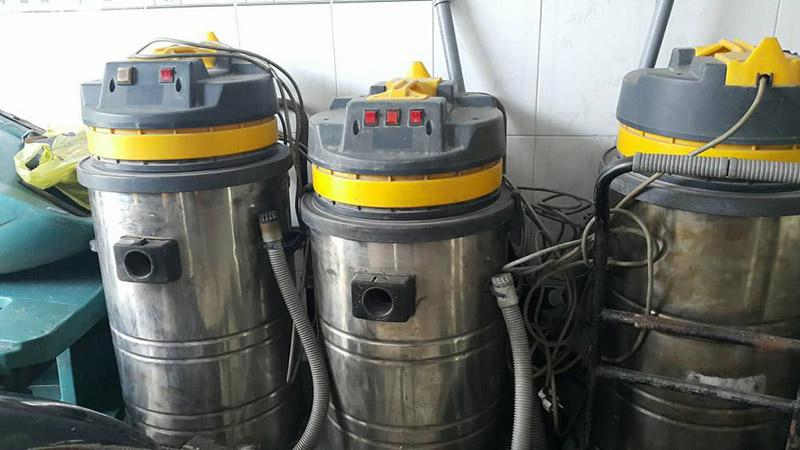
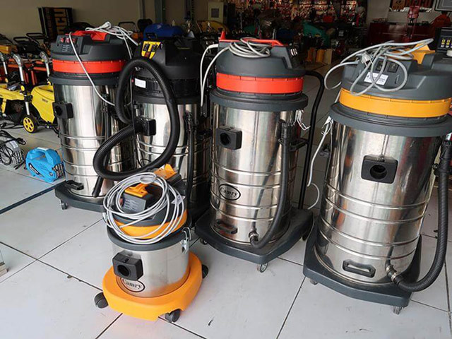
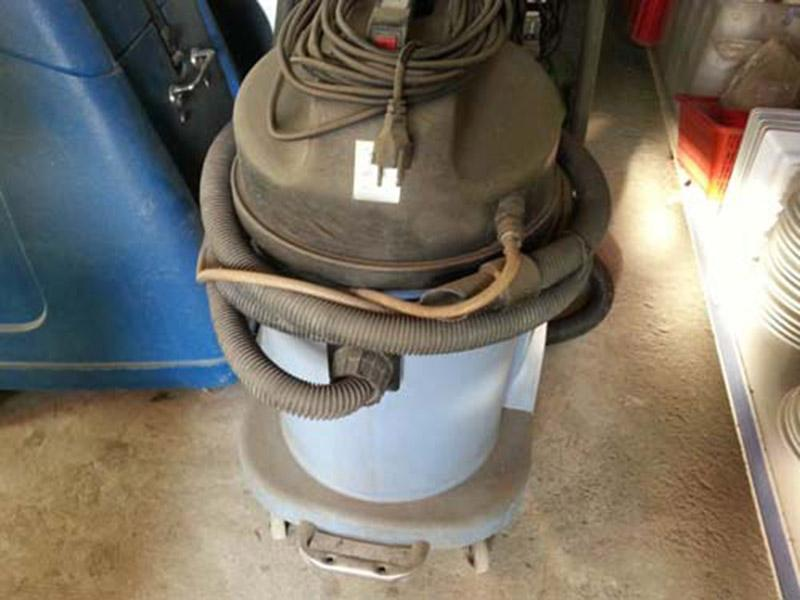
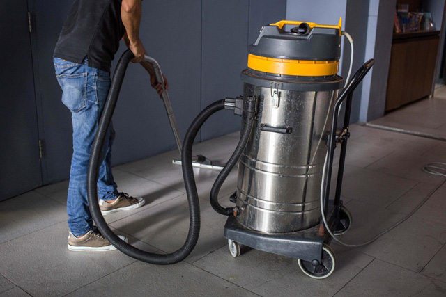

Máy hút bụi công nghiệp cũ giá rẻ & chính hãng
Máy hút bụi công nghiệp mang đến nhiều lợi ích cho khâu vệ sinh nhà xưởng, xí nghiệp. Tuy nhiên, giá thành của dòng máy này không phải là rẻ, đặc biệt là các dòng máy nhập khẩu Mỹ, châu Âu. Chính vì vậy, nhiều khách hàng lựa chọn giải pháp mua máy hút bụi công nghiệp cũ. Vậy có nên sử dụng máy hút bụi công nghiệp cũ hay không? Cần lưu ý những gì để chọn được mẫu máy hút bụi nhà xưởng chất lượng? Cùng chúng tôi tìm hiểu qua bài viết dưới đây!

Ưu điểm khi mua máy hút bụi công nghiệp cũ
Máy hút bụi công nghiệp cũ là những dòng máy đã qua nhiều lần sử dụng trước khi được thanh lý. Chính vì vậy, nhiều người cho rằng các sản phẩm máy hút bụi cũ thường đã “quá đát” và rất dễ hư hỏng. Tuy nhiên, không phải tất cả máy hút bụi công nghiệp cũ đều có chất lượng kém. Thực tế, chất lượng xuống cấp không phải là lý do duy nhất để thanh lý máy hút bụi mà còn nhiều lý do khác như:
- Doanh nghiệp mở rộng hoạt động kinh doanh nên cần đến thiết bị máy hút bụi công suất lớn hơn. Do đó họ chọn thanh lý máy cũ để giảm chi phí đầu tư.
- Doanh nghiệp không còn nhu cầu sử dụng máy hút bụi công nghiệp nên cần thanh lý để thu hồi vốn.
- Các đơn vị muốn nâng cấp sang các dòng máy hút bụi đa tính năng để phục vụ cho quá trình vệ sinh, dọn dẹp.
- …
Nói cách khác, máy hút bụi công nghiệp đã qua sử dụng vẫn sở hữu nhiều ưu điểm đáng để lựa chọn như sau:
Giá thành sản phẩm rẻ
Một trong những lý do lớn nhất mà khách hàng chọn mua máy hút bụi công nghiệp đã qua sử dụng chính là giá thành sản phẩm rẻ. Chính vì đã qua sử dụng nhiều lần, khả năng vận hành và hiệu suất máy sẽ không được đảm bảo 100%, do đó mức giá sản phẩm chỉ bằng 30 – 50% so với máy mới. Tuy có giá thành rẻ nhưng chất lượng cũng vẫn được đảm bảo nếu chọn được sản phẩm tốt.
Đa dạng lựa chọn
Hiện nay trên thị trường thanh lý có rất đa dạng các dòng máy hút bụi nhà xưởng. Mỗi dòng máy sẽ có những đặc điểm, khả năng vận hành, giá thành khác nhau. Nhờ vậy khách hàng có nhiều sự lựa chọn hơn để đáp ứng tốt nhất nhu cầu sử dụng của đơn vị mình.

Có cơ hội sử dụng các thương hiệu lớn, chất lượng
Như đã đề cập ở trên, không phải máy hút bụi công nghiệp cũ nào cũng có chất lượng kém. Nhiều model máy chỉ được sử dụng trong thời gian ngắn nên chất lượng vẫn được đảm bảo, độ mới từ 85 – 95% là không hề lạ. Do đó, nhiều khách hàng đang có nhu cầu sử dụng máy hút bụi nhà xưởng vẫn có thể sở hữu được những mẫu máy chất lượng đến từ các thương hiệu nổi tiếng.
Những nguy cơ tiềm ẩn khi mua máy hút bụi cũ công nghiệp
Bên cạnh những lợi ích, việc chọn mua máy hút bụi cũ cũng tồn tại nhiều nguy cơ tiềm ẩn bởi thị trường phân phối khá phức tạp. Một vài rủi ro mà doanh nghiệp có thể gặp phải như:
Khó đảm bảo chất lượng máy
Với nhu cầu sử dụng máy hút bụi công nghiệp đã qua sử dụng ngày càng cao, thị trường cũng xuất hiện thêm nhiều đơn vị thanh lý mới. Không khó bắt gặp các trường hợp máy cũ được tân trang lại để bán ở giá cao dù thực tế chất lượng máy cực kỳ kém. Trường hợp mua trúng những sản phẩm kém chất lượng này, rất dễ phát sinh hư hỏng trong quá trình vận hành thậm chí có thể gây nguy hiểm.

Hiệu suất làm việc kém, tiêu hao điện năng
Các dòng máy hút bụi công nghiệp thanh lý chắc hẳn sẽ có mức tiêu hao điện năng cao hơn. Động cơ máy vận hành đồng thời cũng kém hơn dẫn đến hiệu suất làm việc giảm. Nếu muốn cải thiện tình trạng này cần “tân trang”, thay thế các linh kiện cũ đã gỉ sét hay bị mài mòn.
Không có chính sách bảo hành
Một trong những hạn chế của việc mua máy hút bụi đã qua sử dụng chính là không có chính sách bảo hành rõ ràng hoặc bảo hành thời gian rất ngắn. Do vậy, doanh nghiệp phải chịu chi phí khi có sự cố, rủi ro phát sinh. Nếu thường xuyên gặp phải sự cố hỏng hóc, doanh nghiệp sẽ tốn nhiều chi phí cho việc sửa chữa và khó khăn trong tìm mua linh kiện thay thế.
Khó tìm được linh kiện thay thế
Một số thách thức khi sử dụng máy hút bụi công nghiệp đã qua sử dụng bao gồm việc khó khăn trong việc tìm thấy linh kiện thay thế và ảnh hưởng đến tuổi thọ của máy. Một số dòng máy cũ có bộ lọc HEPA, nhưng sau thời gian sử dụng, hiệu suất lọc bụi mịn có thể giảm đi đáng kể.
Mua máy hút bụi công nghiệp cũ – có nên hay không?
Mặc dù phương thức mua sắm máy hút bụi công nghiệp cũ có những hạn chế và rủi ro tiềm ẩn, nhưng vẫn được nhiều người ưa chuộng. Lý do là có nhiều cửa hàng uy tín bán sản phẩm với cam kết chất lượng. Đặc biệt, một số cửa hàng có thể cung cấp bảo hành cho máy hút bụi cũ sau khi mua và ngay cả khi gặp sự cố, họ cũng sẵn sàng hỗ trợ sửa chữa.
Tuy nhiên, những rủi ro này đủ để khiến khách hàng phải cân nhắc kỹ lưỡng trước khi quyết định mua máy hút bụi cũ. Điều này đặt ra câu hỏi liệu nên hay không nên mua máy hút bụi cũ. Để có cái nhìn rõ ràng hơn, hãy cùng tìm hiểu thông tin cần thiết dưới đây.

Khi nào nên mua máy hút bụi đã qua sử dụng
Để giảm thiểu rủi ro khi mua máy hút bụi đã qua sử dụng, người tiêu dùng nên xem xét việc mua từ người quen, người bạn hoặc từ các cửa hàng có uy tín, nổi tiếng với uy tín tốt.
Các máy hút bụi cũ nên được chọn là những máy không quá cũ, với các bộ phận vẫn hoạt động tốt. Lựa chọn các máy còn mới khoảng 70 – 90% sẽ đảm bảo an toàn hơn, đặc biệt nếu vẫn còn thời gian bảo hành còn hiệu lực.
Khi chọn mua máy hút bụi cũ, nên ưu tiên các sản phẩm từ những thương hiệu lớn đã có uy tín trên thị trường như máy hút bụi công nghiệp Life Clean, máy hút bụi gia đình Super Clean, máy hút bụi Hitachi…
Không nên mua máy hút bụi công nghiệp cũ khi
- Bộ phận hoạt động không còn hiệu quả: Nếu các bộ phận chính của máy hút bụi đã qua sử dụng không hoạt động đúng cách hoặc đã hỏng hóc, việc sử dụng máy này có thể gây ra nhiều vấn đề kỹ thuật và tiềm ẩn nguy cơ cho người dùng.
- Thời gian sử dụng quá lâu: Máy hút bụi công nghiệp đã qua sử dụng trong thời gian dài có thể đã trải qua nhiều vấn đề và hỏng hóc, đặc biệt là với các bộ phận quan trọng như động cơ, bộ lọc và hệ thống hút bụi.
- Thiếu bảo hành hoặc hỗ trợ kỹ thuật: Khi mua máy hút bụi cũ, nếu không có thời gian bảo hành còn lại hoặc không có dịch vụ hỗ trợ kỹ thuật từ nhà sản xuất hoặc nhà cung cấp, người dùng sẽ gặp khó khăn khi cần sửa chữa hoặc bảo dưỡng máy.
Nên mua máy hút bụi công nghiệp cũ hay máy hút bụi công nghiệp giá rẻ
Máy hút bụi công nghiệp đã qua sử dụng cho nhà xưởng có giá thành rẻ, nhưng cũng đi kèm với nhiều rủi ro tiềm ẩn.
Tuy nhiên, nếu vẫn muốn đầu tư vào máy hút bụi công nghiệp cũ để tiết kiệm chi phí, bạn cần lưu ý các điều sau:
- Chọn mua máy từ các đơn vị phân phối có chính sách bảo hành và bảo trì sản phẩm minh bạch, rõ ràng.
- Tiến hành chạy thử máy trước khi quyết định mua bán.
- Ưu tiên mua lại máy hút bụi công nghiệp cũ của các thương hiệu lớn, vì các sản phẩm từ những thương hiệu này thường có động cơ bền bỉ và tuổi thọ cao.
Lưu ý khi chọn mua máy hút bụi công nghiệp cũ
Kiểm tra và vận hành máy thử trước khi mua
Điều đầu tiên bạn cần làm là quan sát phần vỏ ngoài máy hút bụi. Mức độ mới cũ của máy có thể dễ dàng nhận thấy thông qua phần vỏ: có bị trầy xước nhiều hay nứt gãy, bạc màu hay không?
Tiếp theo không thể bỏ qua bước vận hành kiểm thử máy hút bụi. Bạn có thể yêu cầu nhà cung cấp chạy thử máy hút bụi thực tế để xem xét khả năng vận hành, lực hút của máy, hiệu suất làm sạch,… Ngoài ra thông qua việc vận hành thiết bị ta còn có phát hiện nhiều bất thường như:
- Máy vận hành có tiếng ồn lớn không?
- Có phát ra tiếng động lạ không?
- Máy di chuyển có được dễ dàng?
- Động cơ có nhanh bị nóng?
- …

Thêm một lưu ý cực kỳ quan trọng đó chính là tuyệt đối không sử dụng các model tự chế. Bởi trong quá trình vận hành sẽ rất dễ xảy ra tình trạng rò rỉ điện hay chập cháy,… gây nguy hiểm.
Chọn sản phẩm từ thương hiệu phổ biến
Các dòng máy hút bụi công nghiệp cũ từ các thương hiệu lớn vẫn là một trong những lựa chọn đáng cân nhắc. Dù cho đã qua sử dụng nhưng chất lượng sản phẩm vẫn sẽ được đảm bảo, hiệu suất không giảm quá nhiều. Các thương hiệu lớn mà khách hàng có thể tham khảo như: Fiorentini, Delfin, IPC, TopClean,…
Để đảm bảo chắc chắn là hàng chính hãng, bạn có thể yêu cầu người bán xuất trình các giấy tờ chứng minh nguồn gốc xuất xứ, chứng nhận chất lượng,… Đây sẽ là căn cứ giúp bạn yên tâm chọn mua sản phẩm.
Giá thành máy hút bụi cũ phải chăng
Như đã đề cập ở trên, giá thành máy hút bụi đã qua sử dụng chỉ bằng 30 – 50% so với máy mới. Mức giá sẽ tùy thuộc vào độ mới của máy, hiệu suất vận hành, tiêu hao năng lượng,… Do đó cần xem xét mức giá nhà cung cấp đưa ra đã phù hợp với chất lượng sản phẩm hay chưa. Khách hàng cũng cần cảnh giác với những “món hời” thanh lý máy hút bụi giá quá rẻ.
Tìm mua tại địa chỉ thanh lý máy hút bụi cũ uy tín
Cuối cùng, khách hàng nên tìm chọn các đơn vị cung cấp uy tín, chất lượng với thông tin, địa chỉ rõ ràng. Ngoài ra, có thể tham khảo ý kiến của bạn bè, người thân hoặc những người có kinh nghiệm để chọn được địa chỉ mua hàng chất lượng.
Không nên mua sản phẩm trên các diễn đàn hay trang rao vặt. Bởi độ uy tín của các trang này cực kỳ thấp, tiềm ẩn nhiều rủi ro mua phải hàng kém chất lượng. Một đơn vị cung cấp máy hút bụi công nghiệp chính hãng, uy tín sẽ có chính sách bảo hành minh bạch, hỗ trợ sửa chữa và thay thế linh kiện nhanh nhất.
Trên đây là những thông tin quan trọng cần lưu ý khi bạn đang xem xét mua máy hút bụi công nghiệp cũ. Mặc dù có những ưu điểm về giá thành, việc mua máy hút bụi đã qua sử dụng cũng đồng nghĩa với nhiều rủi ro tiềm ẩn. Để đảm bảo rằng, bạn sẽ có một sản phẩm đáng tin cậy và phù hợp với nhu cầu của mình, hãy cân nhắc kỹ lưỡng và tuân thủ các nguyên tắc chọn lựa phù hợp. Chúng tôi hy vọng rằng thông tin trong bài viết này sẽ giúp bạn có quyết định đúng đắn và hài lòng với lựa chọn của mình về máy hút bụi công nghiệp cũ. Nếu quý khách hàng đang có nhu cầu tìm mua máy hút bụi công nghiệp công suất lớn chính hãng, chất lượng và giá tốt, hãy liên hệ ngay với ICD CLEANING MACHINE để được hỗ trợ tốt nhất!
 Tư vấn cách chọn lựa máy chà sàn nhà gia đình
Tư vấn cách chọn lựa máy chà sàn nhà gia đình Có nên mua máy hút bụi công nghiệp cho gia đình?
Có nên mua máy hút bụi công nghiệp cho gia đình? TOP 5 máy hút bụi công nghiệp 3000W bán chạy đáng đầu tư
TOP 5 máy hút bụi công nghiệp 3000W bán chạy đáng đầu tư